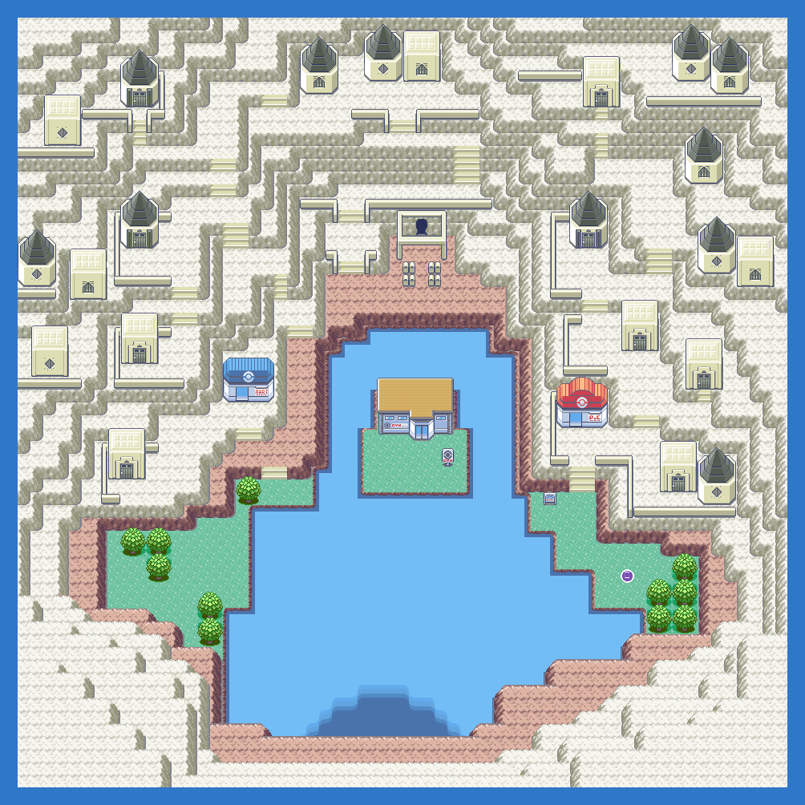
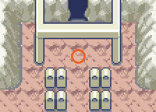
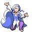
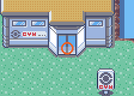
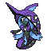

PokémonEMMA'S EMERALD
OFFICIAL Strategy Guide
Sootopolis City
TIP
No wild Pokémon in the grass here. Time of day: M = morning (6–10), D = day (10–19), E = evening (19–20), N = night (20–6).
Event 1: Groudon and Kyogre

The two titans clash in the middle of the city while UNCLE and UNC G look on, finally realising what they woke. Steven sends you to the Cave of Origin, then Wallace sends you to the Sky Pillar for Rayquaza.

Event 2: Gym

Only after Rayquaza calms the two does the gym open. Juan is inside.
Legendary Pokémon here

Tapu Fini
LV50
WaterFairy
from 6 badges · how to get it ›
Phione
LV60
Water
from Champion · how to get it ›
Static encounters: walk up and press A. Caught = gone for good; beaten or fled = back next visit.
Catch ’Em All! Surfing
 | Magikarp: | LV5–35 | Common | MDEN |
 | Arrokuda: | LV26 | Common | MDEN |
 | Chinchou: | LV11 | Common | MDEN |
 | Totodile: | LV18–28 | Common | MDEN |
 | Shellder: | LV32 | Common | MDEN |
 | Psyduck: | LV14–15 | Uncommon | MDEN |
 | Quaxly: | LV30–32 | Uncommon | MDEN |
 | Oshawott: | LV8–9 | Uncommon | MDEN |
 | Finneon: | LV22–23 | Rare | MDEN |
 | Corphish: | LV26–27 | Rare | MDEN |
 | Wiglett: | LV25–26 | Rare | MDEN |
 | Horsea: | LV20–22 | Rare | MDEN |
 | Poliwag: | LV22–24 | Rare | MDEN |
 | Clauncher: | LV34–35 | Rare | MDEN |
 | Seel: | LV31–33 | Rare | MDEN |
 | Luvdisc: | LV26–28 | Rare | MDEN |
Catch ’Em All! Old Rod
| Magikarp: | LV5–10 | Common | MDEN |
 | Mudkip: | LV5–10 | Common | MDEN |
 | Binacle: | LV6 | Common | MDEN |
 | Carvanha: | LV8–9 | Common | MDEN |
Catch ’Em All! Good Rod
| Magikarp: | LV10–30 | Common | MDEN |
 | Buizel: | LV27 | Common | MDEN |
 | Feebas: | LV20–21 | Common | MDEN |
 | Kabuto: | LV20–22 | Common | MDEN |
 | Tirtouga: | LV22–24 | Common | MDEN |
 | Mareanie: | LV29–30 | Common | MDEN |
 | Tentacool: | LV27 | Common | MDEN |
 | Slowpoke: | LV11–13 | Common | MDEN |
 | Spheal: | LV26–28 | Common | MDEN |
Catch ’Em All! Super Rod
| Magikarp: | LV30–35 | Common | MDEN |
 | Alomomola: | LV19 | Common | MDEN |
 | Omanyte: | LV40 | Common | MDEN |
 | Staryu: | LV37 | Common | MDEN |
 | Bruxish: | LV38–40 | Common | MDEN |
 | Tympole: | LV34–36 | Uncommon | MDEN |
| Chinchou: | LV13–15 | Uncommon | MDEN |
 | Frillish: | LV13–14 | Uncommon | MDEN |
| Clauncher: | LV17–19 | Uncommon | MDEN |
 | Mantyke: | LV33 | Rare | MDEN |
 | Barboach: | LV44–45 | Rare | MDEN |
 | Skrelp: | LV35–37 | Rare | MDEN |
 | Tatsugiri (Curly): | LV39–40 | Rare | MDEN |
 | Surskit: | LV41–42 | Rare | MDEN |
 | Clamperl: | LV30–32 | Rare | MDEN |
 | Wailmer: | LV37 | Rare | MDEN |
 | Qwilfish: | LV36 | Rare | MDEN |
141